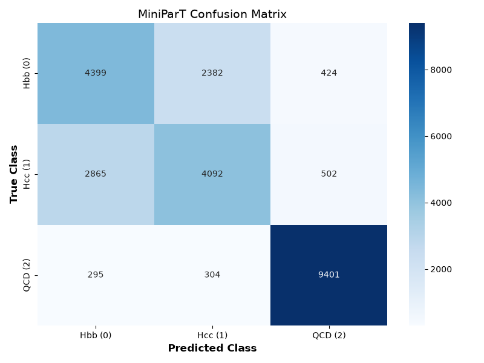
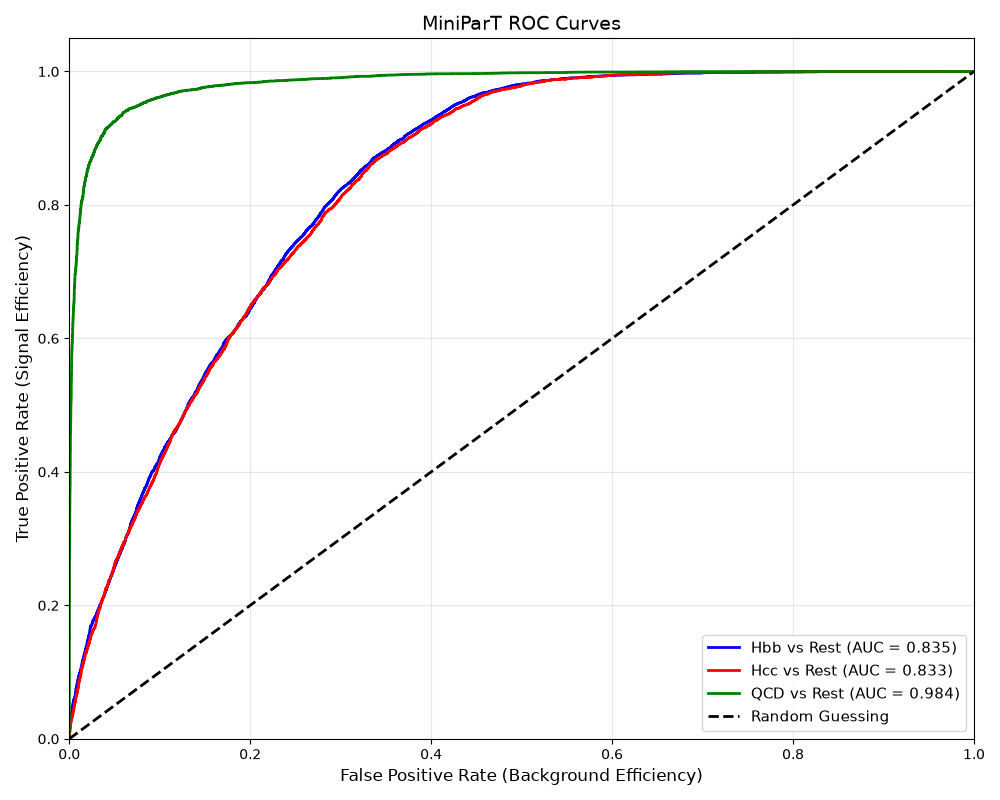

Evaluating the Model
Last updated on 2026-07-15 | Edit this page
Overview
Questions
- Why isn’t training accuracy enough to trust on its own?
- What does a confusion matrix show that a single accuracy number hides?
- What do ROC curves and AUC tell us about a classifier’s tradeoffs?
- What does the model’s internal “fingerprint” of an event let us check that its final answer alone doesn’t?
Objectives
- Compute honest test accuracy using
model.eval()andtorch.no_grad(). - Read a confusion matrix to identify which specific classes get confused with which.
- Interpret a ROC curve and its AUC score for a one-vs-rest classification setup.
- Extract and compare the model’s internal event representations using cosine similarity.
Run this first
PYTHON
model.eval()
correct = 0
total = 0
# Store predictions for a confusion matrix if you want to plot one later
all_preds = []
all_labels = []
with torch.no_grad():
for batch_x, batch_y in test_loader:
batch_x, batch_y = batch_x.to(device), batch_y.to(device)
outputs = model(batch_x)
_, predicted = outputs.max(1)
total += batch_y.size(0)
correct += predicted.eq(batch_y).sum().item()
all_preds.extend(predicted.cpu().numpy())
all_labels.extend(batch_y.cpu().numpy())
test_acc = 100. * correct / total
print(f"Final Test Accuracy: {test_acc:.2f}%")OUTPUT
Final Test Accuracy: 72.54%PYTHON
import matplotlib.pyplot as plt
import seaborn as sns
from sklearn.metrics import confusion_matrix, roc_curve, auc
from sklearn.preprocessing import label_binarize
import torch.nn.functional as F
model.eval()
all_labels = []
all_preds = []
all_probs = []
with torch.no_grad():
for batch_x, batch_y in test_loader:
batch_x, batch_y = batch_x.to(device), batch_y.to(device)
outputs = model(batch_x)
# Apply softmax to get probabilities across the 3 classes
probs = F.softmax(outputs, dim=1)
_, predicted = outputs.max(1)
all_probs.extend(probs.cpu().numpy())
all_preds.extend(predicted.cpu().numpy())
all_labels.extend(batch_y.cpu().numpy())
# Convert lists to NumPy arrays for easier slicing
all_labels = np.array(all_labels)
all_preds = np.array(all_preds)
all_probs = np.array(all_probs)
# Generate the matrix
cm = confusion_matrix(all_labels, all_preds)
# Plotting
plt.figure(figsize=(8, 6))
sns.heatmap(cm, annot=True, fmt='d', cmap='Blues',
xticklabels=['Hbb (0)', 'Hcc (1)', 'QCD (2)'],
yticklabels=['Hbb (0)', 'Hcc (1)', 'QCD (2)'])
plt.xlabel('Predicted Class', fontsize=12, fontweight='bold')
plt.ylabel('True Class', fontsize=12, fontweight='bold')
plt.title('miniParT Confusion Matrix', fontsize=14)
plt.show()
This plot is from an actual full run on the files used in this lesson, reaching 72.54% overall test accuracy. The large off-diagonal numbers (2382, 2865) are Hbb/Hcc confusion, much bigger than the Hbb/Hcc-to-QCD confusions (424, 502, 295, 304). That’s expected, not a bug: bottom and charm jets are physically similar, and telling them apart is genuinely hard even for full-scale taggers.
PYTHON
# Binarize the labels for One-vs-Rest ROC computation
# This turns a label like '1' into [0, 1, 0]
y_test_bin = label_binarize(all_labels, classes=[0, 1, 2])
n_classes = y_test_bin.shape[1]
plt.figure(figsize=(10, 8))
colors = ['blue', 'red', 'green']
class_names = ['Hbb', 'Hcc', 'QCD']
# Calculate and plot ROC for each class
for i, color, name in zip(range(n_classes), colors, class_names):
# fpr = False Positive Rate, tpr = True Positive Rate
fpr, tpr, _ = roc_curve(y_test_bin[:, i], all_probs[:, i])
roc_auc = auc(fpr, tpr)
plt.plot(fpr, tpr, color=color, lw=2,
label=f'{name} vs Rest (AUC = {roc_auc:.3f})')
# Plot the random guessing baseline
plt.plot([0, 1], [0, 1], 'k--', lw=2, label='Random Guessing')
plt.xlim([0.0, 1.0])
plt.ylim([0.0, 1.05])
plt.xlabel('False Positive Rate (Background Efficiency)', fontsize=12)
plt.ylabel('True Positive Rate (Signal Efficiency)', fontsize=12)
plt.title('miniParT ROC Curves', fontsize=14)
plt.legend(loc="lower right", fontsize=11)
plt.grid(alpha=0.3)
plt.show()
The Hbb and Hcc curves above sit nearly on top of each other, both well below QCD’s. A high “QCD vs Rest” AUC just means the model is good at telling signal apart from background - the easier problem from The Big Picture. The lower, nearly-identical Hbb and Hcc AUCs are the honest signature of the harder problem.
PYTHON
import torch.nn.functional as F
import pandas as pd
model.eval()
# 1. Define a helper function to bypass the final MLP and get the 64D vector
def get_fingerprint(event_tensor):
with torch.no_grad():
# Project into 64D
emb = model.embedding(event_tensor)
# Pass through Self-Attention
contextualized = model.transformer(emb)
# Pool to get the per-event 64D fingerprint
fingerprint = contextualized.mean(dim=1)
return fingerprint
# 2. Group every test event by its true class
hbb_events = torch.tensor(X_test_scaled[y_test == 0], dtype=torch.float32).to(device)
hcc_events = torch.tensor(X_test_scaled[y_test == 1], dtype=torch.float32).to(device)
qcd_events = torch.tensor(X_test_scaled[y_test == 2], dtype=torch.float32).to(device)
# 3. Fingerprint every event, then average within each class into one
# representative 64D vector per class (see the explanation below)
fp_hbb = get_fingerprint(hbb_events).mean(dim=0, keepdim=True)
fp_hcc = get_fingerprint(hcc_events).mean(dim=0, keepdim=True)
fp_qcd = get_fingerprint(qcd_events).mean(dim=0, keepdim=True)
# 4. Compute Cosine Similarities
# Cosine similarity bounds the dot product between -1 and 1
sim_hbb_hcc = F.cosine_similarity(fp_hbb, fp_hcc).item()
sim_hbb_qcd = F.cosine_similarity(fp_hbb, fp_qcd).item()
sim_hcc_qcd = F.cosine_similarity(fp_hcc, fp_qcd).item()
# 5. Display the results in a clean table
print("Cosine Similarity Matrix (1 = Identical, -1 = Opposite):\n")
data = {
"Hbb": [1.0, sim_hbb_hcc, sim_hbb_qcd],
"Hcc": [sim_hbb_hcc, 1.0, sim_hcc_qcd],
"QCD": [sim_hbb_qcd, sim_hcc_qcd, 1.0]
}
df_sim = pd.DataFrame(data, index=["Hbb", "Hcc", "QCD"])
print(df_sim.round(3))OUTPUT
Cosine Similarity Matrix (1 = Identical, -1 = Opposite):
Hbb Hcc QCD
Hbb 1.000 0.712 -0.183
Hcc 0.712 1.000 -0.146
QCD -0.183 -0.146 1.000(Approximate - these averaged-fingerprint numbers depend on the actual training run, but the pattern - Hbb and Hcc pointing in a noticeably similar direction, both clearly separated from QCD - is consistent.)
Why average instead of comparing single events? Grabbing just one Hbb, one Hcc, and one QCD event and comparing their fingerprints directly can look actively backwards. In one such single-event comparison, Hbb and Hcc came out with cosine similarity -0.057 (pointing in opposite directions), even though Hbb and Hcc are the two classes the model confuses constantly - the same run’s confusion matrix showed true Hcc events predicted as Hbb more often than correctly identified. Meanwhile Hbb and QCD came out at +0.322 (pointing in a similar direction), even though QCD is the class the model separates most cleanly from everything else (AUC 0.982). Neither number reflects what the model actually learned - both are noise from picking one arbitrary event per class. Averaging the fingerprint across every test event in a class cancels out that event-to-event noise and leaves a genuinely representative direction for what the model has learned about that class as a whole, which is why it’s the version worth trusting.
Run the block above first, then read on to see what each part does.
Training accuracy (see Training the Model) can lie to you - a model can look great on data it’s already memorized and still be useless on new data. This episode is about actually finding out whether MiniParT learned something real, using only the 20% of data it never saw during training - exactly what the code above just did. The rest of this episode walks back through it piece by piece.
Step 1 - Test accuracy
PYTHON
model.eval()
with torch.no_grad():
for batch_x, batch_y in test_loader:
outputs = model(batch_x)
_, predicted = outputs.max(1)
correct += predicted.eq(batch_y).sum().item()
test_acc = 100. * correct / total-
model.eval()- the opposite ofmodel.train(). Switches off dropout, so the model gives its single best, consistent answer instead of the slightly-randomized training version. -
torch.no_grad()- tells PyTorch not to track gradients here, since we’re only checking answers, not training. Faster, less memory. -
outputs.max(1)- picks whichever of the 3 class scores is highest; that’s the model’s predicted class. -
test_acc- the percentage of unseen test examples classified correctly - the honest report card.
A typical run reaches a final test accuracy around 71% (your own number will vary slightly run to run). Over the 10 training epochs, loss typically drops from around 0.68 to around 0.56, and training accuracy climbs from roughly 66% to 72%.
Step 2 - The confusion matrix: not just “right or wrong,” but how wrong
Overall accuracy hides an important detail: is the model struggling to tell Hbb from Hcc specifically (the hard physics problem from The Big Picture), or mostly confusing signal with background? A confusion matrix answers that by showing, for every true class, exactly which class the model guessed:
PYTHON
cm = confusion_matrix(all_labels, all_preds)
sns.heatmap(cm, annot=True, fmt='d', cmap='Blues',
xticklabels=['Hbb (0)', 'Hcc (1)', 'QCD (2)'],
yticklabels=['Hbb (0)', 'Hcc (1)', 'QCD (2)'])Each row is “events that were actually this class,” each column is “events the model guessed were this class.” A perfect model would have large numbers only on the diagonal; large numbers off the diagonal show exactly which two classes get mixed up. A lot of events landing in the Hbb-row/Hcc-column square (or vice versa) means the model is mixing up the two Higgs decay types - given how physically similar bottom and charm jets are, that’s exactly where you’d expect it to struggle most.
A typical run looks something like this (your own numbers will vary slightly):
| Predicted Hbb (0) | Predicted Hcc (1) | Predicted QCD (2) | |
|---|---|---|---|
| True Hbb (0) | 5138 | 1547 | 520 |
| True Hcc (1) | 3915 | 2962 | 582 |
| True QCD (2) | 275 | 267 | 9458 |
Look closely at the Hcc row: true Hcc events get predicted as Hbb (3915) more often than they get correctly identified as Hcc (2962) - the model is more likely to call an Hcc event “Hbb” than to get it right. QCD, meanwhile, is almost perfectly separated from both signal classes. This is the Hbb/Hcc-vs-QCD asymmetry from The Big Picture showing up directly in real numbers.
Step 3 - ROC curves: how good is each class at different confidence thresholds
So far we’ve only looked at the model’s single best guess, but it
actually outputs a confidence for every class (via
softmax, turning the 3 raw scores into 3 probabilities that
add up to 1). A ROC curve (Receiver Operating
Characteristic) shows the tradeoff between being strict or loose about
that confidence, for one class versus everything else:
- True Positive Rate (y-axis) - of all the real Hbb events, what fraction did we correctly flag as Hbb (“signal efficiency”)?
- False Positive Rate (x-axis) - of all events that were not Hbb, what fraction did we mistakenly flag as Hbb anyway (“background efficiency”)?
- Sliding the confidence threshold traces the curve. Random guessing traces the diagonal; a useful model bulges toward the top-left corner.
-
AUC (Area Under the Curve) boils the whole curve
down to one number:
0.5= coin flip,1.0= perfect classifier.
We do this once per class (“Hbb vs. everything else,” and so on) - a
one-vs-rest approach, which is why labels get
“binarized” first (label_binarize) into three separate
yes/no columns.
A typical run’s AUC values look something like: Hbb vs Rest ≈ 0.83, Hcc vs Rest ≈ 0.83, QCD vs Rest ≈ 0.98. QCD is nearly perfectly separable from everything else, while Hbb and Hcc sit close together and noticeably lower - the same Hbb/Hcc difficulty visible in the confusion matrix above, seen from a different angle.
Bonus - Peeking inside the model with “fingerprints”
Instead of only looking at the model’s final answer, we can grab its internal 64-number description of an event - right after self-attention and pooling, but before the classification head. Think of this vector as the model’s own internal “fingerprint” of what kind of event it thinks this is. Comparing two fingerprints with cosine similarity tells us how similar their direction is, ignoring length: close to 1 means pointing the same way, close to -1 means opposite ways, close to 0 means unrelated directions. MiniParT is never explicitly told “Hbb and Hcc should point in similar directions” - it’s only ever graded on its final guess - so this internal geometry doesn’t have to match human intuition, and the example above shows a case where it doesn’t.
PYTHON
def get_fingerprint(event_tensor):
emb = model.embedding(event_tensor)
contextualized = model.transformer(emb)
fingerprint = contextualized.mean(dim=1)
return fingerprintComparing fingerprints with cosine similarity (-1 = opposite, 1 = identical) gives a human-readable check of whether the model’s internal representation actually separates the three classes. It’s tempting to just grab one Hbb, one Hcc, and one QCD event and compare those three fingerprints directly, but a single event carries a lot of its own noise, so it doesn’t necessarily represent its whole class well. The code you ran above instead averages the fingerprint across every test event in each class first, which is a far more trustworthy summary of what the model actually learned - see the explanation above for why the single-event version can be actively misleading.
Question
Q: A full training run of MiniParT (10 epochs) produced this confusion matrix on the held-out test set:
| Predicted Hbb (0) | Predicted Hcc (1) | Predicted QCD (2) | |
|---|---|---|---|
| True Hbb (0) | 4399 | 2382 | 424 |
| True Hcc (1) | 2865 | 4092 | 502 |
| True QCD (2) | 295 | 304 | 9401 |
Using only this table, compute the overall test accuracy. Then say which two classes the model confuses most often, and whether that matches what this lesson predicted it would struggle with.
A: Overall accuracy is the diagonal sum divided by the total.
Diagonal: 4399 + 4092 + 9401 = 17892. Total:
7205 + 7459 + 10000 = 24664. That gives
17892 / 24664 ≈ 0.7254, about 72.5%.
The largest off-diagonal numbers are 2382 (true Hbb
predicted as Hcc) and 2865 (true Hcc predicted as Hbb), far
larger than the Hbb/Hcc-to-QCD confusions. The model’s mistakes are
concentrated almost entirely on telling Hbb and Hcc apart from each
other, while separating both from QCD cleanly - exactly what The Big Picture predicted.
Quick recap
-
model.eval()+torch.no_grad()+ the held-out test set gives you an honest accuracy score. - A confusion matrix shows which classes get mixed up with which - not just an overall score.
- ROC curves and AUC summarize the tradeoff between catching real signal and letting background through, at every possible confidence threshold.
- You can peek at the model’s internal 64-number “fingerprint” for any event to sanity-check that it’s genuinely separating the three classes internally, not just getting lucky on final guesses.
That’s the whole pipeline, start to finish - from raw CMS Open Data files to a trained, evaluated transformer. See The Complete Code for every piece assembled in one place.
-
model.eval()plustorch.no_grad()plus the held-out test set gives an honest accuracy score, unlike training accuracy; a typical run reaches around 71% test accuracy. - A confusion matrix shows which classes get mixed up with which, not just an overall score; a typical run shows true Hcc events predicted as Hbb more often than correctly identified, while Hbb/Hcc-to-QCD confusion stays small.
- ROC curves and AUC summarize the tradeoff between catching real signal and letting background through; a typical run shows QCD vs Rest (AUC ≈ 0.98) clearly ahead of Hbb vs Rest and Hcc vs Rest (both ≈ 0.83).
- The model’s internal 64-number “fingerprint,” averaged across every test event in a class, can be compared with cosine similarity to sanity-check that it is genuinely separating the three classes internally - comparing single events instead is unreliable and can look backwards.